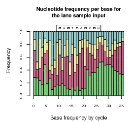
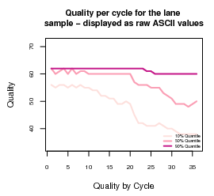
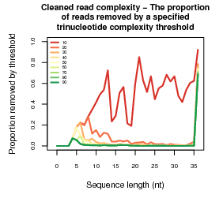
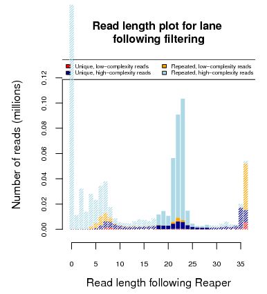
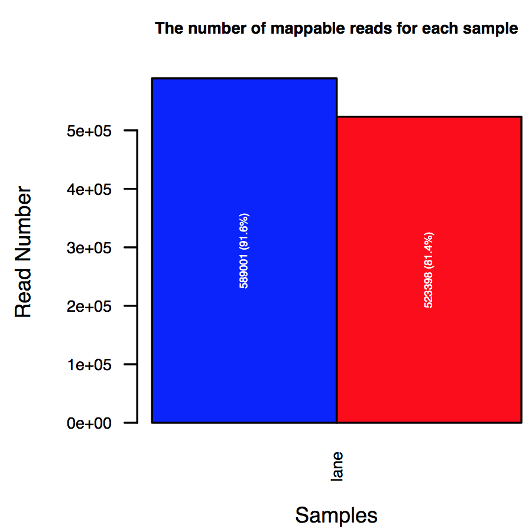
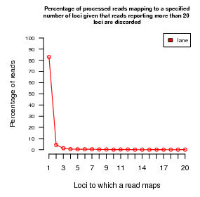
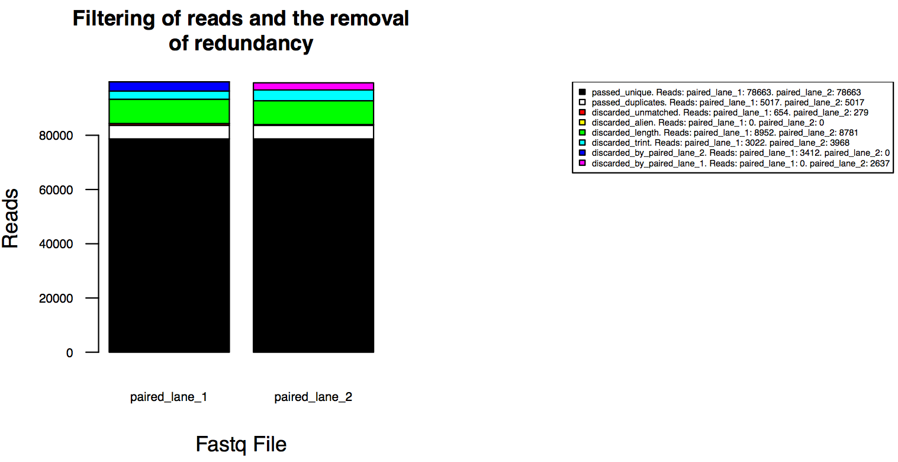

The SequenceImp pipeline incorporates bioinformatic tools such as Bowtie, Reaper, Tally and various R Bioconductor packages into a system for analysing high-throughput sequencing studies that can generate sequences in a fastq format. The pipeline is a Unix command line application that allows the simultaneous analysis of multiple fastq files through a single command. A second annotation pipeline is available that will generate annotaion datasets compatible with SequenceImp to compute read/feature overlaps.
All stages of the pipeline are orchestrated through the imp_commandline.pl script in the seqimp/bin/ directory. The script should be initiated from the directory within which the user would like to analyse their data. A simple introduction to getting started can be accessed by initiating the script with no arguments. Further documentation can be found by initiating the script with the --help option.
Before analysing data for the first time, it is recommended to initiate imp_commandline.pl with the --system-check flag. This will ensure that all dependencies are present and accessible.
NOTE: In the current implementation the imp_commandline.pl script should not be initiated from within the bin directory.
In order to use the SequenceImp pipeline some additional software must be installed on the system. All software should be installed in the user's UNIX PATH.
Perl
bash
R and R libraries with dependencies (available from http://www.r-project.org/)
Additional required packages are:
Bioconducor libraries with dependencies (available from http://www.bioconductor.org/)
Additional required packages are:
Reaper
Available from http://http://www.ebi.ac.uk/research/enright/software/kraken
Tally
Available from http://http://www.ebi.ac.uk/research/enright/software/kraken
Bowtie [7]
Available from http://bowtie-bio.sourceforge.net/index.shtml
Samtools [8]
Available from http://samtools.sourceforge.net/
Before running the pipeline for the first time it is recommended that you run imp_commandline.pl with the --system-check option to ensure all software is installed correctly. It is possible to run certain stages of the pipeline without installing all of the software above. For example, Samtools and Bowtie are not required until the align step. Prior to running each pipeline step SequenceImp will automatically poll the system to check that all of the tools that are required to proceed with the step are available.
The latter stages of the pipeline will also require annotation files. A second pipeline is available to create and format these files, allowing the pipeline to be applicable to broad range of species (see Genomic sequence and annotation (v14-197 onwards)).
Although the majority of the software can run with a very low memory footprint, the alignment of reads to a genomic reference sequence remains a memory bottleneck. As a consequence it is recommended that the align stage of the pipeline is conducted on a server with additional computing power.
These options are passed directly to the imp_commandline.pl script.
Universal
The following options are not particular to any of of the stages.
Optional Display these options along with a description of the variables available in the Configuration file.
Required The pipeline step to initiate. Can be organise, reaper, filter, align or features. Steps should be processed sequentially.
Required Full name of the file containing fastq/sample descriptions (see Description file).
Semi-required A file containing the settings for options required for the analysis run. The file name should be visible from the current directory (see Configuration setup). Either this option or the one below should be supplied.
Semi-required A default configuration file containing the settings for the options required for the analysis run. Just the file name should be given without any path components as they are within a default directory (see Configuration setup). Either this option or the one above should be supplied.
Optional List the default configuration files provided with the pipeline.
Optional Check that all external programs and libraries upon which the pipeline relies are installed and accessible.
organise
The following options pertain to the organise stage of the pipeline.
Optional The directory containing the data files. The default is ./.
Optional The directory where you would like analysis directories to be built. The default is ./.
Optional An identifier for the current analysis: The default is analysis. A process number will be automatically appended to the name and this will be used to create an analysis directory to store all of the related files and data (see Pipeline outputs).
Optional If specified the pipeline will not append a process number to the analysis directory identifier when it is created.
reaper/filter/align/features
The following options pertain to the remaining stages of the pipeline.
Required The directory produced by the organise step in which the sample directories reside.
Required A directory containing species annotation data is required for the align and features steps only (see Genomic sequence and annotation (v14-197 onwards)).
Optional Number of parallel threads to utilise (see Parallelisation). The default is 1.
The pipeline proceeds via a series of sequential steps.
This sets up an analysis directory and configures the user information provided into a structure and formats that the pipeline can navigate.
This uses the Reaper software to trim adapter sequences from reads and then uses Tally to collapse multiple identical sequences into a single non-redundant copy, while recording read depth as a separate parameter in the read header.
This filters reads based on a set of user defined parameters provided as part of the configuration file.
This aligns reads to the relevant genome using Bowtie, providing output in either Bowtie or sam format. Metrics for assessing the features represented in a sample are plotted.
This conducts preliminary feature analysis, either cross-referencing genome alignments with miRBase mature miRNA coordinates or comparing the processed reads to canonical repeat sequence data (see Configuration options for information on steering the analysis).
There are several files and directories required in order to initiate the pipeline.

In order to run the pipeline you will require the gzipped fastq files generated by the next generation sequencing machine (eg. Illumina and 454). A single imp_commandline.pl call will accept multiple fastq files simultaneously from a specified directory and analyse these sequentially or in parallel.
This file will contain a series of user defined parameters to specify exactly how the pipeline should process your data (see Configuration setup). Several default configuration files are provided with the pipeline (--config-list). These can be specified or copied by the user to their working directory and edited according to more specific requirements. All fastq files will be analysed according to the parameters specified within the configuration file.
This is a user-defined, tab delineated table listing the fastq files to be processed along with lane names, sample geometries (relative positions of barcodes, adapters and sequence inserts) and adapter, sequence insert and barcode sequences (see Description file).
This is the analysis specific directory created by the initial organise step of the pipeline according to the current process number. This directory should be specified in the subsequent stages of the pipeline (--analysisDir).
This is the directory containing all of the annotation data required by the pipeline. It will either be provided by the Enright lab or can be created and added to using the SequenceImp Annotation ppeline. It must be specified in the align and features stages of the pipeline (see Genomic sequence and annotation (v14-197 onwards)).
The control of the pipeline is largely managed through a single configuration file. This file contains a list of parameters to be passed to each stage of the pipeline. They are separated into seven sections:
organise
reaper+filter
reaper
filter
align+features
align
features
Each section header is prefixed with an @ symbol, identifying the stage. For more details as to the role of each option use imp_commandline.pl --help or see below Configuration options. The options and variables are tab delineated. The special value NA should be used in the place of a variable if default settings are desired. If you wish to specify the use of a flag in the SequenceImp (eg. --sam), this variable should be followed by the term FLAG. Comments can be added to these files to document changes and decisions made regarding parameters. Lines containing comments should be prefixed with a # symbol.
An example config file is shown below.
There are two ways in which a configuration file can be specified: The pipeline is shipped with a number of predefined configuration files. Issuing imp_commandline.pl --config-list will list these files along with a short description of the intended use of each. These configuration files can be specified with the --default-configuration option. No file path is required for this. Alternatively it is possible to copy one of these files from the default_configuration_files/ directory to a working directory and edit it to suit a user's needs. Such files can be specified with the --user-configuration option. In such cases the full file name including the path to the working directory must be specified.
organise
The @organise section of the Configuration file controls the organise step of the pipeline:
Optional
Full name of file containing mappings between SequenceImp description
columns and the Reaper input parameters.
Default: A pre-shipped mapping file is used.
Optional
Full name of the SequenceImp geometry file that specifies the Description file
fields required for each sample geometry and the corresponding Reaper requirements, including
which Reaper config file is required for each specified geometry (see Reaper settings).
Default: A pre-shipped geometry configuration file is used.
reaper+filter
The @reaper+filter section of the Configuration file controls both the reaper and filter steps of the pipeline:
Optional
A flag specifying whether, where possible, output should be supplied
in fastq format rather than fasta.
Default: fasta
NOTE: In the current version, for small RNA analysis, unique read files are fixed as FASTA format.
Optional
A flag specifying whether reads of length 0 should be considered when
plotting QC plots.
Default: y-axis
set without considering the number
of reads of length 0.
reaper
The @reaper section of the Configuration
file controls the reaper step of the pipeline:
Optional
Path to the Reaper geometry configuration directory. This should contain files
corresponding to each Reaper geometry.
Default: Pre-shipped Reaper geometry configuration files are used.
Optional
Flag specifying whether perl should be used in the place of Tally to
collapse filtered fasta files to unique reads.
Default: Use Tally.
filter
The @filter section of the Configuration file, controls the filter step of the pipeline:
Optional
Maximum low complexity score filter. Low complexity scores are calculated by Reaper. Please see Reaper for more information.
High score implies low complexity.
Default: No filter.
Optional
Minimum trimmed read length filter.
Default: No filter.
Optional
Maximum trimmed read length filter.
Default: No filter.
Optional
Bases to be removed from the 5' end of all trimmed reads.
NOTE: Bases are trimmed after length filters have been applied. Once
reads are trimmed, Tally is called once again to remove redundancy from the
file.
Default: 0.
Optional
Bases to be removed from the 3' end of all trimmed reads.
NOTE: Bases are trimmed after length filters have been applied. Once
reads are trimmed, Tally is called once again to remove redundancy from the
file.
Default: 0.
align+features
The @align+features section of the Configuration file controls the align and features steps of the pipeline:
Required The species for which the analysis will be performed (see Genomic sequence and annotation (v14-197 onwards)).
Required Ensembl version upon which to perform the analysis. For miRNA analysis the user should ensure that the Ensembl and miRBase genome build versions are consistent.
align
The @align
section of the Configuration file controls the align step of the pipeline:
Optional
Value to be passed to the Bowtie
'chunkmbs' option.
Default: Not passed to Bowtie unless set.
Optional
Maximum number of mismatches to be allowed by
Bowtie. Bowtie is performed with the --strata and --best flags specified.
Default:0.
Optional
Maximum number of hits to be reported by Bowtie. Reads that hit above this
threshold are discarded.
Default:10.
Optional
Specifies whether to run the pipeline with sam/bam alignment
format.
Default: Standard Bowtie format.
features
The @features
section of the Configuration file controls the features step of the pipeline. It expects one of two sets
of parameters, depending on the value of the parameter feature.
Required A selected feature type to be assessed. Currently supported are miRNA and repeat.
miRNA For feature miRNA the additional parameters are:
Required
(if feature is set to miRNA).
miRNA annotation version to which read alignments will be compared.
NOTE: Ensure that the Ensembl genome build and miRBase builds are consistent.
Required (if feature is set to miRNA). In rare instances miRBase may contain multiple, overlapping mature miRNA annotations. This option instructs the pipeline how to handle such instances. If ignore is specified the pipeline will warn the user of such instances but proceed without altering the annotation. NOTE: This may lead to reads overlapping this loci to be counted twice. If merge is specified the overlapping miRNAs are merged into a single loci and their IDs combined, separated by a double backslash. If remove is specified, overlapping mature miRNAs are removed from the annotation set. Currently supported are ignore, merge and remove.
Required (if feature is set to miRNA). The nucleotide overlap between the coordinates of a read and those of a miRNA for it to be incorporated into the miRNA read count.
Optional (if feature is set to miRNA). The default pipeline will divide all read depths between each of the reads' genomic alignments equally. These alignments are then assigned to overlapping mature miRNA loci. If this flag is specified the pipeline will only consider those genomic alignments that overlap miRNA loci. The depth of reads that align to a single miRNA are assigned first and subsequently reads that map to multiple miRNAs are mapped according to a proportion related to these unique alignments. See Data formats for more details. Default: Reads depths are divided equally between each of their alignments and assigned accordingly.
Optional
(if feature is set to miRNA).
Instructs the pipeline not to merge miRNA counts based on shared mature miRNA IDs in the final table (see Data formats).
Default: Mature miRNA counts are summed to a single entry where multiple loci share a mature miRNA ID.
Optional
(if feature is set to miRNA).
This option determines the method that will be used to merge the counts of miRNAs as specified by the separate_loci flag above.
The options include mature_id to merge based on the miRBase specified mature ID and sequence if the miRNAs counts are to
be merged where mature miRNAs share an identical sequence. This option can only be specified if the separate_loci option is not used.
Default: Mature miRNA counts are summed to a single entry where multiple loci share a mature miRNA ID (mature_id).
repeat For feature repeat the additional parameters are:
Required (if feature is set to repeat). The repeat/NCBI annotation version to be used for the feature comparisons.
Optional
(if feature is set to repeat).
The maximum number of alignments allowed between
a read and the canonical repeat sequence.
Default: 10.
Optional
(if feature is set to repeat).
The maximum number of mismatches allowed between a
read and the canonical repeat sequence or reference
genome (used for normalisation).
Default: 0.
Optional
(if feature is set to repeat).
Value to be passed to the Bowtie chunkmbs option.
Default: Not passed to Bowtie unless set.
The description file is a tab delineated file describing the experiments to be analysed. The analysis is lane-centric so each fastq file will correspond to a single line in the table that will describe the library geometry and any multiplexed samples. The file must contain the following headers.
A name for the sequencing lane. These names are used to create directories to organise the analysis so it is essential that they are unique. These can contain alphanumerics and underscores and will be used to distinguish unique directories for each lane analysed (see Pipeline outputs).
The associated fastq data file name.
The pipeline currently accepts 5 geometries for small RNA analysis (no_barcode, 5p_barcode, 3p_barcode, 5p_barcode_and_insert and 3p_barcode_and_insert) (see Geometries). The other columns expected to be filled in the description table depend upon the geometry used to prepare the samples for sequencing. All columns must be included but a single hyphen (-) can be inserted in fields that are not required. OPTIONAL columns are not required but can be used to perform more stringent sequence clean up. For example, the sequencing primer normally anneals to the 5' adapter and as a result its sequence is not expected in the sequence reads. However, if supplied, 5p_ad will be passed to Reaper as a tabu sequence (See reaper -h). Below are the columns expected for each geometry (see Geometries for a more thorough description of each.).
Barcodes If barcodes are supplied these should be given as a single entry with the barcodes separated by a single comma.
Below is an example description file, specifying two sample fastq files that each contain three samples with barcodes at the 5' end of the sequence.
RNA-seq experimental design is becoming increasingly diverse. As a result the arrangement and position of barcodes within the adapter sequences of multiplexed samples can also vary between experiments. Reaper and the SequenceImp pipeline regard read geometries in a modular fashion, describing the expected position of RNA fragment sequences, adapters, barcodes and sequence inserts in the sequenced reads. This allows Reaper to more accurately demultiplex samples and trim adapter derived sequences from the fastq files.
There are 5 geometries currently supported by the SequenceImp as listed below. The subparts associated with each of these geometries are described later.
Short sequences used to distinguish multiplexed samples.
The adapter sequence ligated to the 5' end of the RNA fragments.
The adapter sequence ligated to the 3' end of the RNA fragments.
In cases where the barcode is expected at the 5' end of the reads the 5p_seq_insert is a sequence expected to be found between the barcode and the 5' end of the RNA fragment.
In cases where the barcode is expected at the 3' end of the cloned fragments the 3p_seq_insert is a sequence expected to be found between the barcode and the 3' end of the RNA fragment.
In cases where ambiguous bases are used at the 3' or 5' end of the fragments to address ligation biases, these should not be supplied as sequence inserts. Sequence inserts are only suitable for handling known bases. We would suggest that ambiguous bases could be trimmed from reads after the filter stage of the process. In these cases, the 'x' value in the read headers will record the number of instances that an identical read with an identical set of ambiguous bases appeared in the original fastq file.
NOTE: Currently trimming of ambiguous bases can not be performed by the pipeline itself, and would need to be implemented independently. Trimming performed by SequenceImp is followed by an additional call to Tally to remove redundancy.
A schematic representation of the geometries available to the SequenceImp.
By default the Reaper settings for each geometry are supplied in the configuration files accompanying this software (config/reaper_config/). The correspondence between geometry names and the Reaper configuration file selected is supplied below. If you wish to alter the setting for any geometry this can be done in situ. However, we recommend taking a copy of the file for the desired geometry, to place it to a new directory. The file name should remain the same as this is the name recognised by the pipeline. The pipeline can be directed to look in this new directory for the Reaper configuration files by specifying the directory as the reapConfig option in the main configuration file (see Configuration setup). In this way new options can be added to the Reaper call without affecting other analyses. The Reaper call is printed to standard error.
NOTE: It is important that the input and output formats are not altered in this way, along with the -basename, -meta and -i options. This will ensure that the call remains compatible with the pipeline.
| Geometry | Config file |
|---|---|
| no_barcode | no_bar.config |
| 5p_barcode | 5p_bar.config |
| 3p_barcode | 3p_bar.config |
| 5p_barcode_and_insert | 5p_bar_si.config |
| 3p_barcode_and_insert | 3p_bar_si.config |
The more recent versions of the pipeline have transitioned to a new annotation system using the SequenceImp Annotation pipeline. This is intended to provide a more flexible solution to providing annotation for the SequenceImp. Users will be able to convert a set of publicly available annotation files to the annotation pipeline and reformat these into a configuration that is recognised by SequenceImp. The choice of species that can therefore be supported is limited only to those with available Ensembl gene annotation and miRBase miRNA annotation.
For more information concerning the SequenceImp Annotation pipeline please visit http://http://www.ebi.ac.uk/research/enright/software/kraken.
NOTE: It is essential to ensure that, upon initiating the features step for a miRNA analysis, the genome-builds of the Ensembl and miRBase versions specified in the Configurration file correspond (see Configuration setup).
Alignment to the genome sequence is an essential stage of both the align and features step when feature repeat is specified.
The Ensembl annotation is primarily used in the align step of the pipeline to provide an impression as to those features from which short RNA sequences are being derived. In addition to Ensembl gene annotation, this genomewide annotation can be suplemented by RepeatMasker repeat annotations and tRNAScan tRNAs.
In order to determine non-redundant read annotation profiles in the align step of the pipeline, annotation is reduced to remove feature overlaps. This reduction is performed in a hierarchical fashion, with those features higher in the hierarchy gaining precedence over those lower in the list. It should be noted that at this stage of the pipeline miRNA annotation is derived directly form Ensembl. For more information concerning how the hierarchy opporates please visit the SequenceImp annotation pipeline documentation, available at http://http://www.ebi.ac.uk/research/enright/software/kraken.
This annotation is provided as both sense and antisense sets (with respect to the feature strand as recorded in Ensembl)
For generating tables of the level of miRNA expression at the features step, miRNA coordinate sets are derived from miRBase. When performing miRNA analyses it is essential that the user ensures the genome builds of both the Ensembl and miRBase annotation sets are compatible.
NOTE: miRBase annotation is used for the features step only. At the align stage all annotation is derived from Ensembl.
At the features step, when repeat is specified as the feature, the pipeline compares the reads to sequences that are derived from NCBI or another source of FASTA sequences. To this end sequences have been converted into Bowtie indices.
Once the first step of the pipeline has been initiated subsequent pipeline output will be organised into a directory structure. As mentioned above an analysis directory will be created by the pipeline when the organise step is triggered. Within this new directory, an additional directory will be created corresponding to each sequencing lane described in the description file. In turn each of these will contain a data folder with a hard link to the relevant fastq file enclosed and a metadata folder containing the adapter and barcode information formatted to be compatible with Reaper.

Each step produces additional folders within the sample/lane directories each containing the relevant pipeline outputs. Where multiplexed samples are being analysed, files or information will be labeled with the relevant barcode sequence.
All PDF QC output and graphical results will be deposited within this directory.
The Reaper output will be deposited in this directory, produced by the reaper pipeline step (see reaper -h and Files produced).
This directory will contain all of the filtered read files produced by the filter step along with files containing various metrics used by the pipeline for plotting and subsequent steps (see Files produced).
This directory contains the files produced by the align step of the pipeline including sam, bam and indexed bam files for each sample (see Files produced).
This directory contains the features miRNA analysis output. Most significant is the table containing the unique and non-unique read depth for reads overlapping mature, miRBase annotated miRNA coordinates (see Files produced).
This directory contains the results of the alignment of the processed reads to the genomic sequence and directories which contain the alignment data of reads against the additional sequences of interest, such as repeats as part of the features repeat analysis output. Again these subsidiary folders contain sam, bam and indexed bam files for each sample.
The most significant files produced by the pipeline are listed below. Where samples are barcoded within the same lane, files are distinguishable by their barcode sequence within the file name.
<SAMPLE-ID>.clean.gz - These files contain the raw Reaper output reads. This will either be in fasta or fastq format, which will depend on the settings in the Configuration file. The file will contain all redundant read copies.
<SAMPLE-ID>.uniquified.fa.gz - These files contain the fasta sequences of the non-redundant reads. See the Data formats section for information as to how the redundant read frequency is recorded in these files.
<SAMPLE-ID>.clean.processed.fa.gz - These files contain the fasta sequences of all the reads that pass the filter step of pipeline.
total.saved.trimmit.tab - The total number of reads that passed the filter step of the pipeline for each sample.
<SAMPLE-ID>.bowtie.temp.output.sam.gz - Raw Bowtie output in SAM format. Unmapped reads are filtered out using Samtools.
<SAMPLE-ID>.bowtie.unique.output.sam.gz - Bowtie output with optional fields added (see Data formats).
<SAMPLE-ID>.bowtie.unique.output.bam - The above file converted into BAM format using Samtools
<SAMPLE-ID>.bowtie.unique.output.sort.bam - BAM file sorted using Samtools.
<SAMPLE-ID>.bowtie.unique.output.sort.bam.bai - BAM file indexed using Samtools
<SAMPLE-ID>.bowtie.output.bwt.gz - Bowtie output in standard Bowtie format. Only present if SAM format is not requested in the Configuration File (see Configuration setup).
bowtie.total.mapping.tab - Contains information about the number of redundant reads which map to the genome uniquely and at all, according to the parameters that were passed to Bowtie.
<SAMPLE-ID>.mature.counts.txt - This file contains the number of reads associated with each mature miRNA or miRNA locus. The exact behaviour of the pipeline is directed by the options passed from the Configuration file (see Configuration options). The behaviour of the pipeline and the format of this file will be explained in more detail in the Data formats section.
Following the use of Reaper and Tally only non-redundant copies of reads are retained in the fasta results files. Additional information concerning each read is stored in the read header, for example >3_t11_w32_x7. The first number is an arbitrary identifier ascribed to each entry by the pipeline. The marker t precedes the trinucleotide complexity score determined by Reaper (see Reaper manual). Similarly, w precedes read length and x precedes the number of copies of the read found in the original Reaper trimmed sequence file before the reads are collapsed to their non-redundant entries.
The SAM and BAM files (<SAMPLE-ID>.bowtie.unique.output.sam.gz, <SAMPLE-ID>.bowtie.unique.output.bam etc.) have two extra optional fields appended to each alignment according to standard SAM format specifications (http://samtools.sourceforge.net/SAM1.pdf). None of the currently available fields seemed to fit our purposes so tags DL and DR have been used. Reads are collapsed to unique copies in the pipeline so identical reads are not mapped more than once. As a consequence each sequence is represented by a single set of mappings in the SAM file. This means that each read in the SAM format will have a depth value associated with it that corresponds to the number of copies of that read that were actually sequenced. This is the DR value. In addition, some miRNAs will be expected to map to the genome more than once. The DL value is the number of loci to which a read has mapped in the genome. These optional fields can be accessed in the standard way.
The <SAMPLE-ID>.mature.counts.txt file provides read depths relative to miRBase annotation.
Options specified in the Configuration file will affect how the pipeline proceeds and, consequently, the format of this file (see Configuration options). In principle the file will contain 5 core columns:
This column contains the miRBase mature miRNA ID
This column contains the miRBase precursor ID
This contains the feature's length (eg. the length of the mature miRNA)
This column contains the redundant read depth associated with the mature miRNA locus, where replicates of identical reads are considered and incorporated.
This column contains the non-redundant read depth for each miRNA, where redundancy is removed.
If a single sequencing lane contains multiple barcoded samples, each sample will be represented by a pair of <BARCODE>_Read_Depth and <BARCODE>_Non_Redundant_Reads columns, each labelled with the sample's barcode.
By default, where the same mature miRNA is expressed from multiple loci (according to the mature miRBase ID), the expression values for this miRNA are summed together into a single row in the table and all of the representative precursors are listed in the Precursor column. By supplying the separate_loci flag in the Configuration file (see Configuration options) this behaviour can be changed. In this case the miRNAs are not merged and each locus is ascribed its own unique ID based on its mature ID, precursor ID and start position. This ID is supplied in an additional column within the table (Unique_ID). An extra column containing the mature miRNA sequence (Sequence) is also supplied.
It is also possible to sum the miRNA counts based on shared, identical miRNA mature sequence. In this case the collapse_method sequence should be set in the Configuration file (see Configuration options). A Sequence column will be included in the output containing the shared sequence, and the Mature and Precursor columns will list those mature and precursor IDs merged in each case.
In the default mode the pipeline divides read depth equally between all the valid genomic read alignments for the read, before assigning this divided depth to miRNA loci that may overlap each alignment (as a consequence the expression values are not necessarily integer values). When run in this mode the final row in the table (Mapped_library_depth) represents the number of reads which map to entire the genome with the same mapping parameters. This is supplied for normalisation purposes.
The advantage of this method is that it makes no assumptions as to the origins of reads before distributing read depth between genomic alignments. However, this may lead to reads being erroneously attributed to loci with similar sequence, reducing (or increasing) the signal at a region of interest. Furthermore, if one such locus is differentially expressed, other regions with shared sequence may be incorrectly identifed as such.
This default behaviour can be altered by specifying the proportional flag in the configuration file (see Configuration options). In this case the pipeline performs the division of read depth in an entirely miRNA centric manner, ignoring alignments to other regions of the genome. This allows the pipeline to divide the depth of reads that map to multiple miRNAs (multi-mappers) in a manner that approximates the proportion of uniquely mapping reads at each of the mature miRNA loci. First the depth of the reads whose alignments only overlap a single miRNA (uniquely mapping reads) is assigned to these loci. Next, for each of the reads whose alignments overlap two or more mature loci, the unique depth at each of these loci is taken and temporarily incremented by 1 (this is to prevent all multi-mapping reads being subsequently assigned to a single loci in cases where there are very low unique mapping counts). Finally the depth of the multi-mappers is divided according to the proportion of incremented unique reads at each loci. In this case the Mapped_library_depth represents the sum of the <BARCODE>_Read_Depth and <BARCODE>_Non_Redundant_Reads columns.
This method has the advantage that if the expression of two similar loci can be distinguished by reads derived from unique regions, the distribution of multi-mapping reads may more accurately reflect the expression of these loci than the default behaviour. However, many miRNAs, derived from discrete locations will belong to a miRNA families and possess considerable sequence similarities. In cases where multiple loci cannot be distinguished by uniquely mappng reads, these loci may not subsequently receive the biologically accurate proportion of multimappers. This may also cause issues where uniquely mapping reads are not identified due to low expression.
NOTE: As miRNA counts are generated by overlapping sequencing reads with genomically annotated miRBase miRNAs, in rare situations, where multiple miRNAs are annotated in close proximity it is possible that reads may be counted towards both expression levels. For this reason it is important that care is taken when setting the overlap parameter in the Configuration options.
step=reaper
This PDF is produced during the reaper step of the pipeline. It summarises Reaper statistics and displays additional metrics such as read redundancy, which is calculated as reads are collapsed to unique instances. This file is designed to supply information that can be used to interpret the quality of data derived from a sequence run and to make informed decisions with regard to filters that should be applied in the filter step of the pipeline.
If the pipeline is being used to analyse multiplexed/barcoded sequencing runs. Then multiple samples associated with the same fastq file will be summarised together, within the same set of plots.
Nucleotide Summaries
These plots depict the base composition of all of the reads in the fastq file. In the <SAMPLE-ID>.Reaper_qc.pdf file there will be a pair of these plots for each sample, including each barcoded sample in the case of multiplexed lanes. The first plot summarises the raw reads, while the second summarises the reads after Reaper has trimmed and filtered them.
Quality Summary

This plot summarises the quality of the bases called with each sequencing cycle. The raw ASCII scores are taken directly from the fastq file and should be translated to Phred scores according to the formulae associated with the quality encoding used by the sequencing platform.
Complexity Summary

This plot summarises read complexity. Complexity is recorded for reads of increasing length according to the Reaper sequence complexity calculation (see Reaper Manual). Lines indicate the proportion of reads that would be filtered from the file at the filter stage with each successive complexity threshold applied at the 'filter' step of the pipeline. Complexity thresholds can be altered in the Configuration file.
Length Summary

This plot records the length of the reads in the Reaper output after trimming and filtering. It also indicates the how many reads of each length are unique, or redundant copies. Redundant copies are collapsed to non-redundant entries with an associated frequency value (See Data formats for more details of how these depths are recorded).
The Destiny of Reads in the reaper Stage

This plot summarises the fate of the reads that were submitted to Reaper. The total number and proportion of reads that pass the Reaper thresholds are highlighted. In addition the proportion of reads that are discarded due to each of the various Reaper criteria is recorded.
Read per barcode

This plot records the number of reads that were associated with each barcode supplied in a multiplexed fastq file. This plot is only displayed when appropriate to the experimental format.
In the case of multiplexed sample runs, a series of plots will be
added to summarise the nucleotide and quality of the total lane and nucleotide
composition of reads for which a barcode could not be discerned.
step=filter
These plots provide a summary of read filtering in the 'filter' stage of the pipeline.
This plot demonstrates those reads that are removed by the filter step of the pipeline. Reads lost due to length cutoffs are hashed. Those reads removed due to the application of a complexity threshold are also highlighted if appropriate.
NOTE: The length of the reads are recorded prior to 5' or 3' trimming of reads.
Reads removed by the filter step

step=align
These plots provide a QC summary of the genome mapped reads and a quick reference of the features with which these reads are associated.
Reads Mapping to the Genome

The total number of redundant reads that map to the genome and those that are mapped to a unique location. The percentage of redundant, filtered reads represented is provided.
Number of Loci to which Reads Map

The proportion of the redundant, filtered reads that map to 1 or more loci in the genome. Bear in mind that by default Bowtie is performed with a 'maximum number of loci' cutoff. This maximum will be reflected in the x axis.
Function Annotational of Reads which Overlap Genomic Features

Reads are assigned to a non-redundant annotation class (see Genomic sequence and annotation (v14-197 onwards)) according to the genomic position of their first base. In this way, all reads can only be assigned to a single annotation. All redundant reads are considered for this analysis. Totals per class are plotted as a proportion of the reads found to overlap an annotated region of the genome, either on the sense or the antisense strand, with respect to the region as annotated in Ensembl/RepeatMasker etc. Classes that each represent only a small proportion of the reads that overlap annotation (< 1%) are merged into a set of remaining_repeat_classes or remaining_gene_classes.
Chromosomes to which Reads Map

This plots records which chromosome reads are mapping to and to which strand of the chromosome. It also depicts whether these reads are mapping to single or multiple loci.
step=features (repeat analysis)
These plots provide a QC, first-pass analysis of repeat associated RNAs (or the reads that map to another sequence of interest submitted during annotation assembly). It will produce a single QC file for each of the repeats/sequences associated with the appropriate genome and repversion in the annotation. Each will be labelled with the repeat name.
Reads Mapping to the Repeat Sequence

The number of processed reads that map to the canonical repeat sequence (mappable) and the number that map to a unique position.
The Length of Reads Associated with the Repeat

The length of the redundant read sequences that map to the canonical repeat sequence.
The Sense/Antisense Overlap Length of Reads Mapping to the Repeat

The length of 5' overlap of reads mapping to the positive vs. negative strands of the canonical repeat sequence. Redundant read depth is divided by the number of loci to which the read maps and overlaps are corrected by multiplying the depth of sense and antisense pairs together. The length of overlap is represented as an proportion of all overlapping reads (a fraction of the sum over all lengths).
Repeat Coverage Profile

The sequence coverage, generated from the redundant reads, on both the positive and negative strands of the repeat sequence, according to the criteria supplied in the config file. The count number of each read is divided by the number of times it maps to the repeat sequence. The coverage is corrected for the number of redundant reads that are mappable to the genome, one or more times with the same number of mismatches.
The reaper, filter, align and features stages of the pipeline can be run in parallel across multiple processors. This is done in a lane centric manner, with the lanes/fastq files being assigned to threads. To trigger parallelisation a user should specify the number of processors to be used with the --processors option (This corresponds with the number of threads to start). If more than one thread is used lane specific output will be written straight to file (<SAMPLE-ID>.record.txt) in the lane specific analysis directory rather than to screen.
NOTE: In order to run in parallel, the local Perl installation must be Threads enabled upon compilation. If the pipeline is unable to load the Perl threads module, it will automatically revert to analysing fastq files sequentially.
SequenceImp is able to organise the processing of paired-end sequencing lanes in order to conduct QC and filtering prior to mapping. Currently the pipeline supports the organise, reaper and filter stages for paired sequence files. Throughout this process the SequenceImp maintains the ability to parallelise across multiple processors.
Paired-end sequence processing requires several changes to the standard, small RNA sequencing pipeline:
Universal
The following options are not particular to any of of the stages.
Required The paired flag is required to prompt the pipeline to process paired samples.
Each line in the description file will represent a paired-end sequencing sample.
A separate directory will be created within the analysis directory to house all of the data representing each of the fastq files associated with a single paired-end sample. These two directories will be names according to the user name supplied in the 'Name' column of the Description file followed by a number (1 or 2). The number is assigned according to the order with which the files are provided in the 'File' column.
Each row of the file column should now contain two comma separated fastq files representing the paired sequences. The pipeline assumes that reads within these files are paired based on their relative position.
Standard geometries are not supported for paired-end sequence analysis. The following geometries are currently available.
Standard cloning procedure in which fragment is cloned directly between a 5' and 3' adapter
Both the 5' and 3' adapter sequences are required for each sample. These should be the sequences as represented within the first of the pair of sequence files provided in the 'File' column. These sequences will be reverse complimented and swapped to determine the expected 5p_ad and 3p_ad for the second sequencing file.
NOTE: Please ensure that the simple reverse complementation of each adapter for the cleanup of the second sequencing file is the behaviour you would expect for your paired-end read geometry and sequencing procedure prior to filtering your sequences using the SequenceImp.
The manner in which the pipeline proceeds differs slightly for paired samples. The organise step will seperate the paired files into independent directories to be trimmed and processed. The directories are tagged with the sample name and _1 or _2 (see above). The 'reaper' step trims reads but no longer collapses them to unique reads. The removal of redundant reads is performed in the 'filter' step along with the filtering of reads according to the user's requirements. In the case of paired-end read processing, the pipeline uses Tally to both filter/remove redundancy and re-pair reads from the two trimmed sequence files associated with a paired-end samples. Pairing is encoded by Reaper as a record offset, which is later interpreted by Tally (see the Reaper and Tally manuals). In this way the pipeline is able to ensure that read pairing is maintained.
NOTE: In the reaper step, paired sequence files are trimmed independently. As a result the output files may be of different lengths, containing different numbers of sequences. This is resolved by Tally in the filter step. Please bear this in mind if read pairing is required and expected.
NOTE: Currently 3' trimming of reads at the filter step of the pipeline is not supported for paired-end sequence analysis.
As a consequence of these changes in the manner in which the pipeline proceeds the length distribution plot supplied in the 'reaper' QC pdf no longer defines the number of unique and redundant reads of each length.
In addition there are changes to the plots produced at later stages of the pipeline.
step=filter
For paired-end sequencing the plots for the filter step summarise the filtering and pairing of reads between paired files by Tally.
Summary of read filtering and pairing
This plot summarises the paired-end read filtering statistics. It records why reads were removed from each paired sequence file by Tally and the number of non-redundant and duplicate reads remaining in each file.
Paired-end processing produces additional files.
<SAMPLE-ID>.tallied.XXXXX.gz - These files contained the paired sequencing reads following filtering. They may be in FASTQ or FASTA format denoted as follows.
<SAMPLE-ID>.tallied.fasta.gz - If fastq is not specified in the Configuration file, the filtered output is returned in fasta format.
<SAMPLE-ID>.tallied.fastq.gz - If fastq is specified (see above), reads are returned by Tally in fastq format. In this case, where redundancy has been identified within the sequencing files, for each unique read, base quality is determined according the maximum quality at each base within the corresponding redundant set.
NOTE: Release 17-055 - In the <SAMPLE-ID>.tallied.XXXXX.gz files read IDs now take the format 'read[Unique number]_x[Number of duplicates]/[1 or 2].'.
[1]
R.utils: Various programming utilities. Bengtsson H. (2013).
http://CRAN.R-project.org/package=R.utils
[2]
RColorBrewer: ColorBrewer palettes. Neuwirth E. (2011).
http://CRAN.R-project.org/package=RColorBrewer
[3] GenomicRanges: Representation and manipulation of genomic intervals. Aboyoun P., Pages H. and Lawrence M.
[4]
gplots: Various R programming tools for plotting data. Warnes G.R., Includes R source code and/or documentation contributed by:
Bolker B., Bonebakker L., Gentleman R., Huber W., Liaw A., Lumley T., Maechler M., Magnusson A., Moeller S., Schwartz M. and
Venables B. (2012).
http://CRAN.R-project.org/package=gplots
[5] IRanges: Infrastructure for manipulating intervals on sequences. Pages H., Aboyoun P. and Lawrence M
[6] ShortRead: a Bioconductor package for input, quality assessment and exploration of high-throughput sequence data. Morgan M., Anders S., Lawrence M., Aboyoun P., Pages H. and Gentleman R. Bioinformatics (2009), 25:2607-2608.
[7] Ultrafast and memory-efficient alignment of short DNA sequences to the human genome. Langmead B., Trapnell C., Pop M. and Salzberg S. Genome Biology (2009), 10:R25.
[8] The Sequence alignment/map (SAM) format and SAMtools. Li H.*, Handsaker B.*, Wysoker A., Fennell T., Ruan J., Homer N., Marth G., Abecasis G., Durbin R. and 1000 Genome Project Data Processing Subgroup. Bioinformatics (2009), 25:2078-9.
Please contact us with feedback or questions: